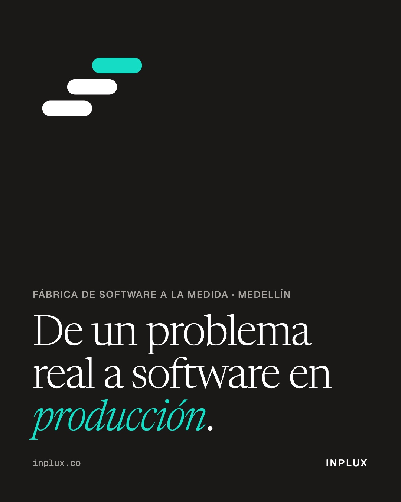

De un problema real a software en producción.
Esa frase es lo que hacemos. INPLUX diseña, construye y evoluciona productos digitales para empresas y entidades. La IA acelera el trabajo. Personas expertas dirigen y validan las decisiones críticas.
Desde hoy este espacio muestra el trabajo, no promesas.
inplux.co
Alt Fondo oscuro con el símbolo de INPLUX, tres barras ascendentes, y el texto «De un problema real a software en producción».
exports/jpg/2026-09-17_01_marca.jpg · exports/png/2026-09-17_01_marca.png